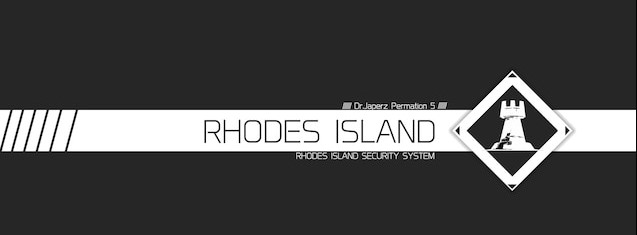
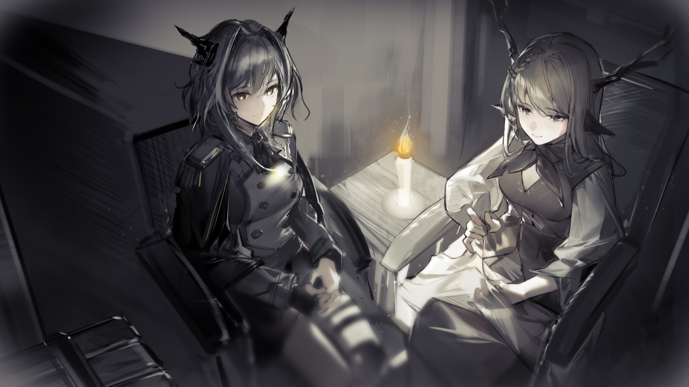
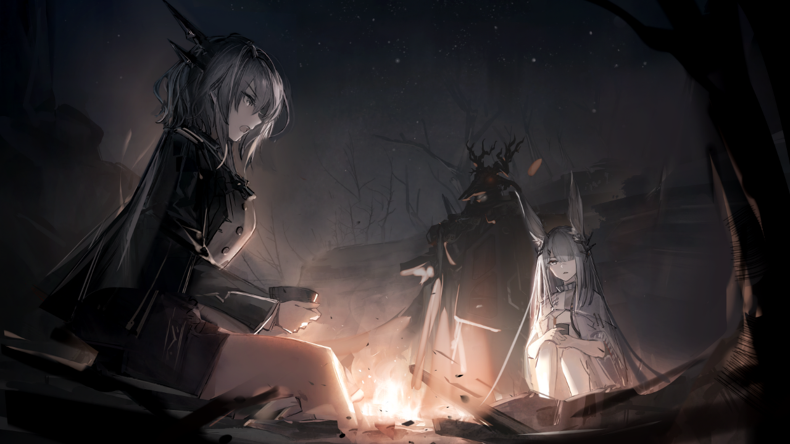

Arknights is a mobile tower defense game developed and published by Chinese game developer Yostar.
The game was released in China in May 2019, and internationally in January 2020.
Arknights is set in a dystopian world where a mysterious mineral
called Originium has caused a variety of illnesses and mutations in humans and animals.
Players in Arknights assume the role of a "Doctor," who leads a team of "Operators" - characters with unique abilities -
to defend against hordes of enemies in a series of strategic battles.
The game features a variety of modes, including story missions, challenge maps, and limited-time events.
Players can recruit new Operators through a gacha-style system and can level up and promote their Operators to improve their stats and abilities.
The conflict between Rhodes Island and the Reunion is a central theme in Arknights, and players must navigate the complexities of
the world as they work to protect humanity from the dangerous effects of Originium. Over time, players will encounter a variety of characters on
both sides of the conflict, each with their own motivations and beliefs, as they explore the story and work to uncover the truth behind the Originium crisis.
Rhodes Island

Rhodes Island is a pharmaceutical company in the world of Arknights that specializes in researching and developing treatments for Oripathy,
a disease caused by exposure to the mineral Originium. The company is led by Dr. Kal'tsit,
a skilled and enigmatic scientist who oversees the production of various drugs and treatments used to combat Oripathy.
In addition to its research efforts, Rhodes Island also operates a team of combat-ready Operators who
are tasked with defending against the Reunion, a rebel faction that seeks to overthrow the governments and
corporations that they believe have failed to protect the people from the effects of Originium.
Rhodes Island Pharmaceuticals Inc., commonly known as Rhodes Island (R.I.), is the protagonistic faction of Arknights.
Made up almost exclusively of the Infected, R.I. legally operates as a pharmaceutical company that provides care and treatment to the Infected,
but due to the wide variety of Operators in its employ with combat skills, they are more of a paramilitary organization who strives to fight for the betterment of the Infected.
Based on the eponymous landship, Rhodes Island dedicates themselves to develop treatments and a possible cure to Oripathy which has plagued Terra since the advent of Catastrophes.
R.I. is also expert in dealing in matters and problems associated with Oripathy, notably the rampant social discriminations against the Infected, which is why R.I.
possesses a paramilitary force to provide security for their personnel and patients, though R.I. can (and will) offer their service as a pseudo-PMC should the need arise.
Such authority and abundant resources to deal with social issues worldwide are in fact a direct inheritance from its predecessor Babel,
a militant organization of Kazdel that was meant to restore the nation's peace and the Sarkaz's livelihood. As a matter of fact, it is hard to say that whether R.I.
is actually a non-state actor in the guise of a humanitarian organization, and many nations have been doubting R.I.'s supposed political neutrality.
Reunion
The Reunion Movement, commonly known as Reunion, is the main antagonistic faction of the first part of the Arknights' Main Theme. It is a paramilitary social movement of
the Infected who seeks to end all forms of discrimination and oppression by Terran society against them.
The origins of the Reunion Movement could be traced to the advent of Catastrophes in Terra, which leads to the proliferation of Originium and the Oripathy pandemic along with it.
As a result of the Terrans' deep hatred against the Infected, they are marginalized with many non-Infected developing a strong hatred for them. While many Infected attempted to find a peaceful solution for their plight,
those who suffer the worst, united by their grudge towards the Terrans, choose to utilize force to liberate themselves from the systematic oppression they faced.
Reunion was founded by Talulah and Alina that was originally used to shelter persecuted Ursine Infected inhabiting the Northern Tundra. After Talulah struck an alliance with Patriot's Guerrillas and FrostNova's Yeti Squadron,
it rapidly grew in a short span of time, eventually adding Infected from other Terran countries into their ranks. At first, Reunion waged an armed insurgency against the Ursus Empire for its poor treatment of the Infected,
later becoming more active around Terra via their organization of pro-Infected protests and non-violent civil resistances.
Talulah

Talulah(Left-side) and Alina(Right-side)
Talulah Artorius is an NPC in Arknights. She is the major antagonist in Act I of the Main Theme and an important character in Act II.
Talulah is the daughter of Edward Artorius, a close friend of Wei Yenwu from Victoria who actually possessed the royal bloodline of the Draco house and fled the country to avoid the persecution of the Aslan house. Despite being a Draco,
she is actually birthed by a Lung mother who is Wei's sister. She spent most of her childhood in Lungmen, Yan, together with her half-sister Ch'en Hui-chieh and her childhood friend Beatrix Schwire. She is known to be a straightforward,
idealistic, and hotheaded person without considering any consequence filled with a courageous and just heart, and she even dared to protect young Schwire and Ch'en from school bullies while having herself injured.[1] The two sisters indeed
had a solid bondage despite having different bloodline.
Long story short Talulah ran away from the Ursine authorities for the next three years while hiding herself among some remote villages in the Northern Tundra. She was eventually brought in by Ivan Iziaslav who treated her as his daughter alongside
an Elafia named Alina. The serenity, however, came to an end when his village was targeted by an anti-Infected pogrom conducted by the Ursine soldiers, and Ivan willingly sacrificed himself to protect the villagers. Out of fury, Talulah burnt down the
soldiers while bringing Alina with her for the escape. Seeing that the persecution of the Infected is far worse than her imagination, Talulah decided to start an organization that could protect them. Together with Alina, the two started the Reunion Movement.
Frost Nova And Patriot

Talulah(Right-side) Recruiting Frost Nova(Left-side) And Patriot(center)
Born Yelena, FrostNova is one of the well-known Reunion leaders. Her leadership of the famed Yeti Squadron and her frigid ice Originium Arts that could control her surrounding temperature and freeze any target earns her many titles such as the "Yeti Princess"
and the "Wintry Death." In order to cast her Arts, she chants her spells in the form of folksongs and channels it through her Caster wand. However, this comes with a heavy price. She suffers from extreme hypothermia that others could get frostbite just by touching her skin.
Her Arts often comes with a deteriorating health and the worsening of her Oripathy. In order to lessen her burdens, she has to share her power with the Yetis, giving them the ability to control frost and ice as well.
FrostNova's childhood is a tragedy. She was born in a poor family who was sentenced to work in a labour camp in the Northern Tundra due to their opposition of the militaristic policies of the Ursus Empire. Her parents and grandmother were forced to work in an inhuman conditions while mining Originium,
leading to their Oripathy. In the meantime, the Ursine soldiers overlooking the mine took pleasure on the persecution of those Infected slave-miners; they drew lots for them and then execute them on spot if they pulled a black lot. FrostNova's family could not avoid such fate either; her parents were killed when
she was five and her grandmother when she was nine. By the time she reached eleven, it was her turn to be executed alongside other children in the mine. Her fate seemed to be sealed the moment she pulled the black lot.
Just before she was about to be executed by those evil soldiers, a miracle happened onto the poor girl. Her Arts suddenly went rouge for the first time, killing four executioners in the process. While the other soldiers threatened to kill other children, a mysterious band of guerrillas defeated them and rescued the survivors.
Their heroes turned out to be Buldrokkas'tee the "Patriot" and his Shieldguard guerrillas. Seeing FrostNova living in misery inside the camp, Patriot decided to raise her up as his beloved adopted daughter. Those children would eventually became members of the Yetis whom she treats as her brothers and sisters.
For the next few years, the matured FrostNova and her Yetis worked together with Patriot's guerrillas to liberate the oppressed Infected from the hands of their imperial overlords. Their brilliant military tactics earned them reputations to both the commoners and the authorities as guardians of the Tundra.
Their name would eventually attract Talulah's proto-Reunion Movement. After a somewhat awkward first encounter with an unnecessary duel, the two factions decided to sit down and discuss an alliance between the two. To Talulah, Reunion needs military aid so that they could defend themselves from the soldiers' harassment.
She also needs them to accomplish her goal of liberating all the Infected across Terra. The two at first oppose such idea, thinking that it was too impossible. Following her persuasions as well as Ursus targeting them as a threat to the empire, the two eventually agreed her words and incorporated their forces into Reunion.
While the two had some minor disagreement about some issues, especially when it came to Patriot's stubborn, conservative mind, the alliance was nonetheless a success.